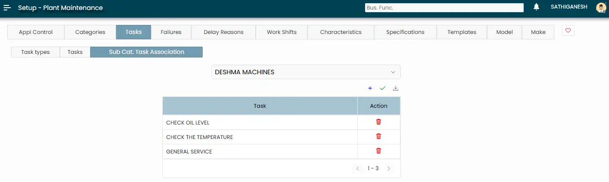

<div data-category="Plant Maintenance" data-title="Sub. Cat. Task Association" data-updated="January 27, 2026" data-contributors="RoadmapIT" data-breadcrumb="Home,Plant Maintenance,Sub. Cat. Task Association">
  <div class="page-content">
    <p>Task can be associated with the sub category in this screen.</p>
    <h5>Navigation path:</h5>
    <p class="fs-6">Plant Maintenance \ Setup \ Setup-Plant Maintenance \ Tasks \ Sub. Cat. Task Association</p>
    
    <ul style="list-style-type: none; align-content: center">
      <li class="mouse-icon">Enter/Select the Sub category</li>
      <li class="mouse-icon">
        Click to
        <i class="bi bi-plus fs-4 mx-2 text-primary"></i>
        Add.
      </li>
      <li class="mouse-icon">Enter the Task</li>
      <li class="mouse-icon">
        Click on
        <i class="bi bi-check-lg fs-4 mx-1 text-success"></i>
        button to save
      </li>
    </ul>
  </div>
</div>